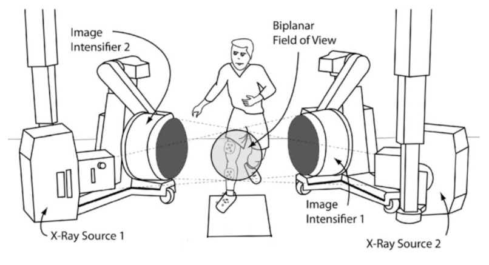
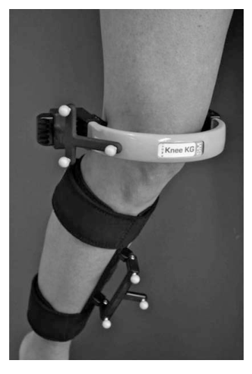
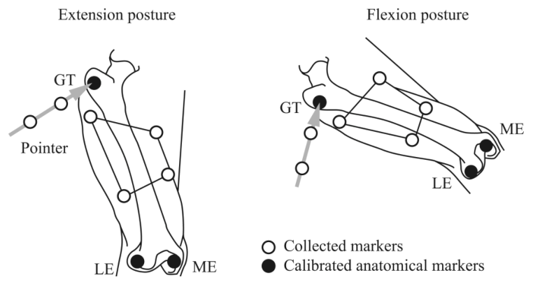
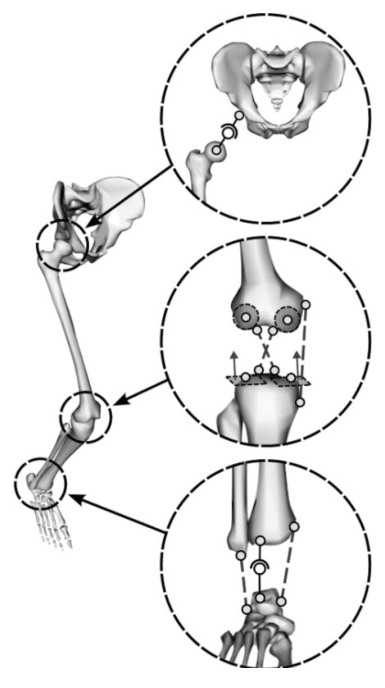
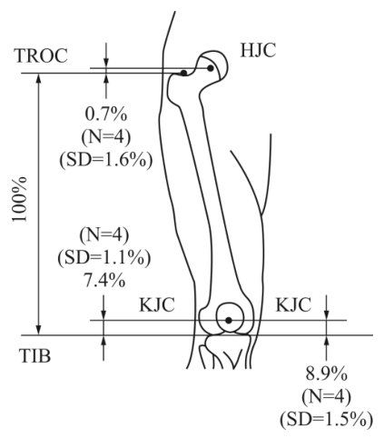
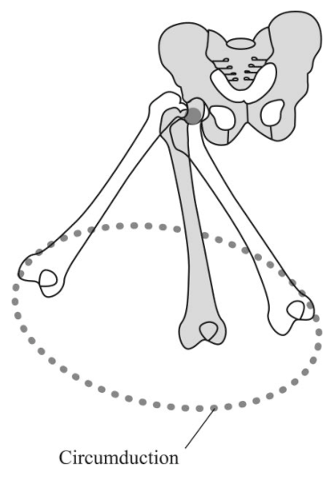

Chương 4 — Các Sai Số Trong Đo Lường
Liên quan đến các hệ phân tích chuyển động quang – điện tử, dựa trên các điểm đánh dấu thụ động, các nguồn sai số dụng cụ và đặc biệt là sai số thực nghiệm (vị trí chính xác của các điểm mốc giải phẫu và các nhiễu mô mềm) sẽ được mô tả và định lượng. Với nhiễu mô mềm là vấn đề chủ chốt cần giải quyết, và vẫn là một chủ đề nghiên cứu mở, các phương pháp hiện được đề xuất để giải quyết vấn đề này cũng sẽ được trình bày trong chương này.
4.1. Các sai số dụng cụ
Sai số dụng cụ là các sai số phát sinh từ việc tái tạo các vị trí ba chiều (3D) của các điểm đánh dấu thụ động trong hệ tọa độ của phòng thí nghiệm, do chính hệ quang – điện tử gây ra. Có hai loại sai số dụng cụ [CHI 05]: các sai số hệ thống phụ thuộc vào tính hợp lệ của mô hình được chọn để xác định các camera và độ chính xác mà các tham số của mô hình này được nhận diện trong quá trình hiệu chuẩn hệ thống, và các sai số ngẫu nhiên liên quan đến việc tính toán điểm đánh dấu, tức là khi tính đến sự biến dạng hình dạng khi vận tốc chập không phù hợp với vận tốc chuyển động của một số điểm đánh dấu, hoặc khi một số điểm đánh dấu bị che khuất một phần hoặc hợp nhất nếu chúng quá gần nhau.
Để hạn chế sai số hệ thống, đối với một hệ quang – điện tử nhất định, thiết lập thực nghiệm phải được xác định cẩn thận, tức là thể tích làm việc, số lượng và vị trí tối ưu của các camera, kích thước điểm đánh dấu, v.v. Cũng quan trọng là dành thời gian để quét tốt toàn bộ không gian yêu cầu trong quá trình hiệu chuẩn động (xem Chương 2).
Việc sửa chữa sai số ngẫu nhiên về cơ bản dựa trên làm mịn hoặc lọc các quỹ đạo điểm đánh dấu [DE 08]. Sai số dụng cụ tương tự như nhiễu trắng trải rộng trên một dải tần số rộng; một bộ lọc kiểu “thông thấp” (low-pass) thường được dùng để loại bỏ một phần nhiễu trong các phép đo hệ thống, mà không làm mất thông tin về chuyển động được phân tích, ở các tần số thấp hơn. Tuy nhiên, trong các ứng dụng thể thao, việc xem các tín hiệu tương ứng với quỹ đạo điểm đánh dấu là đứng yên là không thực tế, và các kỹ thuật tiên tiến hơn, dựa ví dụ trên hàm phân bố Wigner [GIA 00] được khuyến nghị thay thế.
Trong các điều kiện vận hành thích hợp, sai số dụng cụ trong vị trí không gian của một điểm đánh dấu đối với các hệ hiện tại xấp xỉ 1/3.000 của đường chéo của thể tích đã được hiệu chuẩn. Các giá trị này là chấp nhận được trong hầu hết các ứng dụng phân tích chuyển động.
4.2. Các sai số thực nghiệm
Sai số thực nghiệm không liên kết trực tiếp với hệ được sử dụng mà đúng hơn là với việc triển khai nó. Chúng về cơ bản do các chuyển động nhiễu của mô mềm, nằm giữa xương và da, và do việc định vị kém các điểm mốc giải phẫu, cả hai đều ảnh hưởng đến việc ước tính động học khớp.
4.2.1. Các nhiễu mô mềm
Chuyển động của mô mềm, thường được gọi là “Nhiễu Mô Mềm” (Soft Tissue Artifacts), gây ra các sai số lớn hơn nhiều so với sai số dụng cụ, điều này làm cho chúng trở thành vấn đề lớn nhất trong phân tích chuyển động [LEA 05]. Các nhiễu này tương ứng với sự chồng chập của một số hiện tượng: các hiệu ứng quán tính, sự co cơ, sự biến dạng và trượt của da trên cấu trúc xương bên dưới, đặc biệt là gần các khớp [CAP 96]. Chúng không chỉ phụ thuộc vào đoạn khâu cơ thể mà còn vào vị trí của điểm đánh dấu trên đoạn khâu cơ thể, và biên độ của chúng lớn hơn nhiều so với sai số dụng cụ. Hơn nữa, các nhiễu này cực kỳ khó sửa chữa vì tần số của chúng rất gần với tần số của chuyển động được phân tích (làm cho việc lọc không hiệu quả), và chúng cũng rất phụ thuộc vào nhiệm vụ thực hiện [FUL 97] hoặc thậm chí vào hình thái của đối tượng.
4.2.1.1. Đánh giá
Peters và các cộng sự [PET 10] đã đề xuất một tổng quan tài liệu về định lượng các nhiễu mô mềm trên chi dưới. Họ chỉ ra số lượng mẫu được phân tích thấp (thường khoảng năm đối tượng, tối đa là 18) và việc hầu hết thời gian các đối tượng còn trẻ và khá gầy (chỉ số khối cơ thể (BMI) nhỏ hơn 25). Trong các nghiên cứu được chọn cho tổng quan này, dữ liệu tham chiếu (tiêu chuẩn vàng) thường thu được bằng cách sử dụng các chốt nội tủy [BEN 06, FUL 97, HOU 04, REI 97] hoặc các bộ cố định ngoài [ALE 01, CAP 97, CAP 96]. Mặc dù các kỹ thuật này cho phép đo trực tiếp các chuyển động của xương, chúng xâm lấn và dễ bị thay đổi trong chuyển động. Các nghiên cứu gần đây nhất sử dụng hình ảnh y khoa, ít xâm lấn hơn, làm tham chiếu: cộng hưởng từ [RYU 03, SAN 06a] hoặc thường xuyên hơn là huỳnh quang. Một số tái tạo chuyển động 3D của bộ xương từ một nguồn huỳnh quang đơn [AKB 10, KUO 11, SAT 96, STA 05, TSA 11], trong khi những nghiên cứu khác [BAR 13b, LI 09, MIR 13, MYE 12] sử dụng huỳnh quang hai mặt phẳng, chính xác hơn – sai số trong động học gối trong trường hợp này ước tính là 0.4±0.9° và 0.4±0.4 mm [LI 08] – với một trường thu nhận tương đối hẹp, giới hạn các nghiên cứu này ở khớp gối trong một số nhiệm vụ: đi bộ trên máy chạy bộ, leo cầu thang và chuyển từ ngồi sang đứng.

Trên chi dưới, đoạn khâu nhạy cảm nhất với nhiễu mô mềm là đùi, đặc biệt gần lồi cầu ngoài nơi biên độ của các nhiễu này thường lớn hơn 20 mm [CAP 96, FUL 97]. Ngược lại, trong khi đi bộ, các vùng ít bị nhiễu mô mềm làm phiền nhất là dải chậu – chày trên đùi và vùng xa của cơ cẳng chân trước trên cẳng chân [BAR 13a].
Các hiệu ứng của các nhiễu này lên động học khớp phụ thuộc vào vị trí của các điểm đánh dấu trên da trên đoạn khâu, chuyển động được phân tích cũng như phương pháp dùng để tính các tham số động học. Xét về khớp gối, các nghiên cứu cho thấy sai số tối đa xấp xỉ 20 mm cho dịch chuyển và 15° cho xoay [PET 10]. Hầu hết tập trung vào một pha cụ thể của chu kỳ dáng đi. Các sai số Root Mean Square (RMS) được ước tính là 2.1° cho gập/duỗi, 2.4° cho varus/valgus và 3.9° cho xoay trong/ngoài trong pha chân tiếp đất [REI 97], và tương ứng là 4.5, 5.9 và 4.5° giữa pha giữa đung đưa và pha giữa chân tiếp đất [AKB 10]. Các sai số này giới hạn các ứng dụng lâm sàng có thể sử dụng loại phân tích chuyển động này.
4.2.1.2. Mô hình hóa
Nhiễu mô mềm có thể được chia thành hai hiện tượng chồng lấp: một sự biến dạng của cụm điểm đánh dấu biểu diễn một đoạn khâu cơ thể, và một chuyển động như một khối (chuyển động cứng) của cụm điểm đánh dấu so với bộ xương bên dưới [AND 98]. Các nghiên cứu gần đây đã chỉ ra rằng chuyển động cứng là thành phần quan trọng nhất đối với hầu hết các hoạt động thể chất, nhưng sự biến dạng của cụm không hoàn toàn có thể bỏ qua [AND 12, BAR 13b, DE 12, GRI 13].
Các biểu diễn toán học của nhiễu mô mềm được đề xuất trong tài liệu có thể được phân loại thành ba nhóm lớn [DUM 13]. Nhóm thứ nhất, và xa nhất là phổ biến nhất, mô tả các chuyển động cá biệt của các điểm đánh dấu trên da so với cấu trúc xương bên dưới [AKB 10, CAM 09, CAP 96, KUO 11, SAT 96, STA 05, TSA 11]. Nhóm thứ hai dựa trên việc phân rã nhiễu mô mềm thành các phép biến đổi cứng và không cứng [BAL 98, CHA 95, DUM 09a, SAN 06a, SUD 07]. Nhóm thứ ba tách các biến thiên về hình dạng bề mặt đoạn khâu thành các mode khác nhau [AND 12, DUM 09b]. Dumas và các cộng sự [DUM 13] chỉ ra rằng các biểu diễn khác nhau của trường nhiễu mô mềm có thể được xem như một phần của một hình thức tổng quát, dựa trên một cách tiếp cận mode; điều này có ưu điểm cho phép lựa chọn các tham số quan trọng nhất cần xem xét khi phát triển một mô hình hóa nhiễu mô mềm, tức là một đánh giá các nhiễu bằng cách sử dụng một số tham số có thể truy cập thực nghiệm.
Hiện tại, một vài mô hình được đề xuất chỉ dựa trên đánh giá các chuyển động điểm đánh dấu cá biệt và đòi hỏi việc đo lường một số lượng lớn các tham số [ALE 01, CAM 13]. Do đó, các mô hình mới phải được phát triển thêm và sẽ có khả năng dẫn đến những cách thức nguyên bản để bù đắp nhiễu mô mềm.
4.2.1.3. Bù đắp
Hiện tại, không có phương pháp nào được đề xuất để bù đắp nhiễu mô mềm, nghĩa là các sai số gây ra trong động học khớp không thể được sửa chữa hoàn toàn. Tuy nhiên, nhiều phương pháp đã được khám phá.
Một cách tiếp cận bao gồm việc sử dụng một dây đai gắn (thường bằng cách quấn) vào mỗi đoạn khâu cơ thể, một cụm tối thiểu ba điểm đánh dấu được cố định cứng vào dây đai [MAR 99]. Tuy nhiên, không có sự xác thực hoàn chỉnh nào về các dây đai khác nhau. Houck và các cộng sự [HOU 04] đã thử nghiệm một dây đai được phát triển để sửa hiệu ứng nhiễu trên khớp gối và phát hiện một sự khác biệt trung bình nhỏ hơn 3° giữa các góc gối thu được bằng dây đai và những góc thu được bằng các chốt nội tủy, bằng cách giới hạn so sánh của họ ở pha chân tiếp đất của dáng đi. Sati và các cộng sự [SAT 96] đã đánh giá dây đai được phát triển bởi LIO (Phòng Thí Nghiệm Nghiên Cứu Hình Ảnh và Chỉnh Hình) tại Montreal, và tìm thấy một sai số trung bình 0.4° trong varus–valgus và 2.3° trong xoay trục so với dữ liệu huỳnh quang trong khi gập gối đến 65°. Độ tái lặp của dây đai này trong khi đi bộ kể từ đó đã được cải thiện [HAG 05, LAB 08], và nó hiện được sử dụng trong các ứng dụng lâm sàng [GAU 11].

Một cách tiếp cận khác, được gọi là đa hiệu chuẩn (multicalibration), đề xuất việc phát triển các thuật toán sửa chữa a posteriori cho các quỹ đạo của các điểm đánh dấu trên da, dựa trên các sai số trong đo lường vị trí điểm đánh dấu so với các điểm xương tương ứng trong một số tư thế. Vì nhiễu mô mềm đặc thù cho cả đối tượng và nhiệm vụ được phân tích, các vị trí tương đối giữa các điểm xương – được ước tính bằng sờ nắn – so với các điểm đánh dấu trên da phải được đo, ít nhất, trong các tư thế cực đoan của chuyển động được phân tích [CAP 97]. Cách tiếp cận này hiệu quả, trong một bối cảnh lâm sàng, để phân tích các chuyển động gối trong khi đi bộ [STA 09] hoặc thậm chí những chuyển động của xương bả vai trong khi nâng cánh tay [BRO 11].

Cuối cùng, cách tiếp cận thứ ba bao gồm việc sử dụng lại các phương pháp tối ưu hóa để sửa chữa các quỹ đạo của các điểm đánh dấu trên da. Hai loại tối ưu hóa chính đã được đề xuất: theo đoạn và toàn cục. Các tối ưu hóa theo đoạn nhằm sửa chữa độc lập các quỹ đạo của các điểm đánh dấu cố định vào mỗi đoạn khâu cơ thể. Dựa trên giả định rằng chuyển động của toàn bộ tập hợp các điểm đánh dấu là cứng, các phương pháp này chỉ bao phủ sự biến dạng của cụm các điểm đánh dấu đoạn [CHE 95, SOD 93]. Mặc dù động học khớp đã được cải thiện, các nghiên cứu gần đây [AND 12, BAR 13a, DE 12, GRI 13] đã chỉ ra rằng hầu hết các sai số tương ứng với chuyển động cứng của cụm mà không được tính đến bởi các phương pháp sửa chữa này. Các tối ưu hóa toàn cục đồng thời sửa chữa các quỹ đạo của tất cả các điểm đánh dấu gắn với chi dưới [LU 99, REI 05] hoặc chi trên [CUT 06, ROU 02]. Chúng dựa trên việc mô hình hóa a priori các khớp khá phức tạp trong chuỗi động học bằng các khớp quay, khớp khớp (universal joints), khớp cầu hoặc các cơ cấu song song [DI 07, FEI 03]. Động học khớp thu được bởi các phương pháp này phần lớn phụ thuộc vào lựa chọn này, tức là các ràng buộc động học được tính đến trong mô hình [AND 10, DUP 10] và việc điều chỉnh đúng mô hình cho đối tượng được phân tích là khó khăn [SCH 11]. Do đó, việc sử dụng lâm sàng loại phương pháp này vẫn còn gây tranh luận [STA 09].

4.3. Sai số trong việc định vị các điểm mốc giải phẫu
Để diễn giải đúng động học khớp, điều quan trọng là xác định chính xác các điểm mốc giải phẫu, sẽ hình thành cơ sở cho việc xây dựng các hệ tọa độ trực chuẩn liên kết với các đoạn khâu cơ thể liền kề, và sau đó là “Hệ Tọa Độ Khớp” (xem Chương 3). Tổng quan tài liệu của Della Croce và các cộng sự [DEL 05] cung cấp một phân tích chi tiết về thông tin sẵn có liên quan đến độ chính xác của việc định vị các điểm mốc giải phẫu, dù là dưới da (như các lồi cầu gối) hay bên trong (như tâm chỏm xương đùi), cũng như độ nhạy của động học khớp đối với các sai số trong việc định vị này.
4.3.1. Đánh giá
Liên quan đến việc định vị các điểm mốc giải phẫu dưới da, các nguồn sai số tương ứng, một mặt, với việc các “điểm tham chiếu” này thực sự không phải là điểm mà là những bề mặt xương lớn và sự xác định chúng do đó phụ thuộc vào kỹ thuật sờ nắn được sử dụng. Mặt khác, sờ nắn thường khó khăn do độ dày của mô mỡ của đối tượng được phân tích. Như vậy, việc định vị các điểm này phụ thuộc cả vào người thao tác và đối tượng. Độ biến thiên trong và giữa các người thao tác của việc định vị này đã được đánh giá trong một số nghiên cứu, cho các điểm mốc trên bàn tay hoặc cổ tay [SMA 93] hoặc chi dưới [DEL 99, RAB 02]. Đối với một số điểm mốc, như các gai mào chậu và mấu chuyển lớn, độ biến thiên là cao, xấp xỉ 15–20 mm, dù là trong hay giữa các người thao tác.
Đối với các điểm mốc giải phẫu bên trong, vì việc sử dụng hình ảnh không tương thích với một quy trình lâm sàng thường quy, hai cách tiếp cận khả dĩ bao gồm, một mặt, sử dụng các phương trình hồi quy và, mặt khác, sử dụng các phương pháp chức năng. Để phân tích dáng đi, điểm mốc giải phẫu bên trong quan trọng nhất cần xác định là tâm chỏm xương đùi, để xác định hệ tọa độ giải phẫu của xương đùi. Các phương trình hồi quy đã được đề xuất trên cơ sở phân tích thống kê để xác định, bằng cách sử dụng một số chiều dài nhân trắc học đo trên khung chậu của đối tượng được phân tích, vị trí của điểm này. Các hồi quy này đã được thiết lập hoặc từ hình ảnh y khoa của một mẫu tương đối nhỏ nam giới trưởng thành [BEL 89, DAV 91] hoặc từ các phép đo trực tiếp trên một số mẫu tử thi [DE 96, SEI 95]. Do đó, mặc dù loại hồi quy này được triển khai trong hầu hết các phần mềm phân tích lâm sàng, cần thận trọng khi sử dụng các hồi quy này cho một ứng dụng lâm sàng, xét đến số lượng mẫu thấp được dùng để thiết lập chúng và sự không phù hợp của các hệ số cho việc phân tích phụ nữ hoặc trẻ em. Gần đây hơn, các phương trình hồi quy được xác định bằng cách sử dụng hình ảnh của trẻ em từ 5–13 tuổi, cả khỏe mạnh và những trẻ bị bại não, đã được công bố [HAR 07].

Giải pháp thay thế để định vị các điểm mốc giải phẫu bên trong, gọi là phương pháp chức năng, đòi hỏi đối tượng phải thực hiện một số chuyển động cụ thể, ngoài chuyển động sẽ được phân tích. Trong một nghiên cứu của Leardini và các cộng sự [LEA 99], giải pháp này được chứng minh là chính xác hơn so với giải pháp dựa trên các phương trình hồi quy, và do đó được ưu tiên. Một số thuật toán đã được phát triển để ước tính tâm hoặc trục xoay của khớp được vận động, từ các quỹ đạo của các điểm đánh dấu trên da thu thập từ các chuyển động cụ thể. Nhóm thứ nhất, gọi là “phép biến đổi kỹ thuật”, gộp các phương pháp dựa trên đặc trưng hóa chuyển động tương đối giữa hai đoạn liền kề: từ việc tính toán trục xoắn, tức thời hoặc hữu hạn [WOL 95]; hoặc từ việc tính toán điểm (hay trục) có chuyển động tối thiểu [CHE 96]. Nhóm thứ hai của các phương pháp được gọi là “fitting hình cầu”: Halvorsen và các cộng sự [HAL 99] xác định tâm của các hình cầu (hoặc trục chung của các hình tròn) được vẽ bởi các quỹ đạo điểm đánh dấu trong chuyển động tương đối giữa hai đoạn liền kề. Phương pháp do Gamage đề xuất [GAM 02], độ chệch của nó được bù đắp trong [HAL 03], dựa trên giả định rằng khoảng cách giữa tâm hoặc trục xoay và các điểm đánh dấu vẫn không đổi trong khi chuyển động. Chang và các cộng sự [CHA 07] đã đưa vào một ràng buộc chuẩn hóa trong hàm được cực tiểu hóa bằng bình phương tối thiểu để cải thiện kết quả, đặc biệt khi biên độ chuyển động thấp. Cuối cùng, phương pháp do Ehrig và các cộng sự [EHR 07] đề xuất ngăn ngừa sự biến đổi tọa độ cần thiết để xem xét chuyển động tương đối, bằng cách xác định trục xoay chung cho chuyển động của cả hai đoạn. Nhiều nghiên cứu đã so sánh độ chính xác của các phương pháp khác nhau khi xác định tâm chỏm xương đùi [MAC 08] và khớp ổ chảo – cánh tay [LEM 10], và đã kết luận rằng phương pháp do Gamage đề xuất là tốt hơn [GAM 02], với một sai số xấp xỉ 1 cm ở cả hai ... việc ước tính tâm khớp hông và tâm khớp vai. Bất kể phương pháp nào được sử dụng, cần phải nhận thức rằng đặc điểm của chuyển động cụ thể do đối tượng thực hiện cũng đóng vai trò quan trọng đối với độ chính xác của ước tính [BEG 07, CAM 06]. Hầu hết các nghiên cứu so sánh hai phương pháp tiếp cận này đều kết luận rằng các phương pháp chức năng tốt hơn, mặc dù các phương trình hồi quy được Harrington và các cộng sự đề xuất gần đây [HAR 07] cũng cho kết quả tốt [SAN 11].

4.3.2. Độ nhạy của động học khớp đối với các sai số này
Della Croce và các cộng sự [DEL 99] đã đánh giá độ biến thiên trong và giữa các người thao tác trong hướng của các hệ tọa độ trực chuẩn liên kết với các đoạn khâu cơ thể Segment Coordinate System (SCS). Đối với các đoạn thon dài, độ biến thiên giữa các người thao tác trong hướng của SCS quanh trục dọc xấp xỉ 5° cho đùi và 9° cho cẳng chân. Độ biến thiên giữa các người thao tác cũng xấp xỉ 9° cho đoạn bàn chân. Nghiên cứu này cũng định lượng hiệu ứng của các sai số thực nghiệm này lên động học khớp, đạt 10° trên các thành phần xoay trong/ngoài của gối và cổ chân. Các nghiên cứu khác đã thử nghiệm độ nhạy của các góc khớp đối với hướng của SCS, bằng cách sử dụng các hệ cơ học [PIA 00] hoặc mô phỏng số [KAD 90], và đã chứng minh một hiện tượng cross-talk, nghĩa là cần thận trọng lớn khi diễn giải các góc khớp biên độ thấp. Đặc biệt, việc xác định chính xác trục gập/duỗi của gối là rất quan trọng [MOS 04], và độ tái lặp của các kết quả động học được cải thiện khi trục gập của gối và tâm hông được thu bằng phương pháp chức năng thay vì sử dụng các điểm mốc giải phẫu [BES 03].
Tóm lại, các sai số thực nghiệm gây ra sự bất định đáng kể trong động học khớp, khó có thể sửa chữa. Do đó, việc thu được các kết quả đáng tin cậy trong bối cảnh phân tích chuyển động lâm sàng vẫn đòi hỏi những nỗ lực nghiên cứu đáng kể.